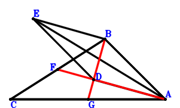
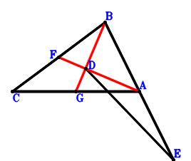

Exercise 3： Let EDAB be a parallelogram. D is the centroid of △BCA. F, G are the midpoints of CB, CA, respectively. EA=CA. Prove that FA⊥GB.

\(\because \) D is the centroid of △BCA \(\therefore \small\overrightarrow{AD}=\dfrac{\small\overrightarrow{AB}}{3} + \dfrac{\small\overrightarrow{AC}}{3}\).\(\because \) EDAB is a parallelogram \(\therefore \small\overrightarrow{AE}=\dfrac{4 \small\overrightarrow{AB}}{3} + \dfrac{\small\overrightarrow{AC}}{3}\).\(\because \) F is the midpoint of CB \(\therefore \small\overrightarrow{AF}=\dfrac{\small\overrightarrow{AB}}{2} + \dfrac{\small\overrightarrow{AC}}{2}\).\(\because \) G is the midpoint of CA \(\therefore \small\overrightarrow{AG}=\dfrac{\small\overrightarrow{AC}}{2}\).\(\because \) EA=CA \( \therefore- \small\overrightarrow{AC}^{2} + \small\overrightarrow{AE}^{2}=- \small\overrightarrow{AC}^{2} + \left(\dfrac{4 \small\overrightarrow{AB}}{3} + \dfrac{\small\overrightarrow{AC}}{3}\right)^{2}=\dfrac{16 \small\overrightarrow{AB}^{2}}{9} + \dfrac{8 \small\overrightarrow{AB} \cdot \small\overrightarrow{AC}}{9} - \dfrac{8 \small\overrightarrow{AC}^{2}}{9}=0.\)In conclusion, \(\small\overrightarrow{FA} \cdot \small\overrightarrow{GB}=- \small\overrightarrow{AF} \cdot \left(\small\overrightarrow{AB} - \small\overrightarrow{AG}\right)=- \left(\dfrac{\small\overrightarrow{AB}}{2} + \dfrac{\small\overrightarrow{AC}}{2}\right) \cdot \left(\small\overrightarrow{AB} - \dfrac{\small\overrightarrow{AC}}{2}\right)=- \dfrac{\small\overrightarrow{AB}^{2}}{2} - \dfrac{\small\overrightarrow{AB} \cdot \small\overrightarrow{AC}}{4} + \dfrac{\small\overrightarrow{AC}^{2}}{4}=0\), that is, FA⊥GB.
Exercise 4： Let D be the centroid of △BCA. A, F, G are the midpoints of BE, CB, CA, respectively. DE=CA. Prove that FA⊥GB.

\(\because \) D is the centroid of △BCA \(\therefore \small\overrightarrow{AD}=\dfrac{\small\overrightarrow{AB}}{3} + \dfrac{\small\overrightarrow{AC}}{3}\).\(\because \) A is the midpoint of BE \(\therefore \small\overrightarrow{AE}=- \small\overrightarrow{AB}\).\(\because \) F is the midpoint of CB \(\therefore \small\overrightarrow{AF}=\dfrac{\small\overrightarrow{AB}}{2} + \dfrac{\small\overrightarrow{AC}}{2}\).\(\because \) G is the midpoint of CA \(\therefore \small\overrightarrow{AG}=\dfrac{\small\overrightarrow{AC}}{2}\).\(\because \) DE=CA \( \therefore- \small\overrightarrow{CA}^{2} + \small\overrightarrow{DE}^{2}=- \small\overrightarrow{AC}^{2} + \left(- \small\overrightarrow{AD} + \small\overrightarrow{AE}\right)^{2}=- \small\overrightarrow{AC}^{2} + \left(- \dfrac{4 \small\overrightarrow{AB}}{3} - \dfrac{\small\overrightarrow{AC}}{3}\right)^{2}=\dfrac{16 \small\overrightarrow{AB}^{2}}{9} + \dfrac{8 \small\overrightarrow{AB} \cdot \small\overrightarrow{AC}}{9} - \dfrac{8 \small\overrightarrow{AC}^{2}}{9}=0.\)In conclusion, \(\small\overrightarrow{FA} \cdot \small\overrightarrow{GB}=- \small\overrightarrow{AF} \cdot \left(\small\overrightarrow{AB} - \small\overrightarrow{AG}\right)=- \left(\dfrac{\small\overrightarrow{AB}}{2} + \dfrac{\small\overrightarrow{AC}}{2}\right) \cdot \left(\small\overrightarrow{AB} - \dfrac{\small\overrightarrow{AC}}{2}\right)=- \dfrac{\small\overrightarrow{AB}^{2}}{2} - \dfrac{\small\overrightarrow{AB} \cdot \small\overrightarrow{AC}}{4} + \dfrac{\small\overrightarrow{AC}^{2}}{4}=0\), that is, FA⊥GB.